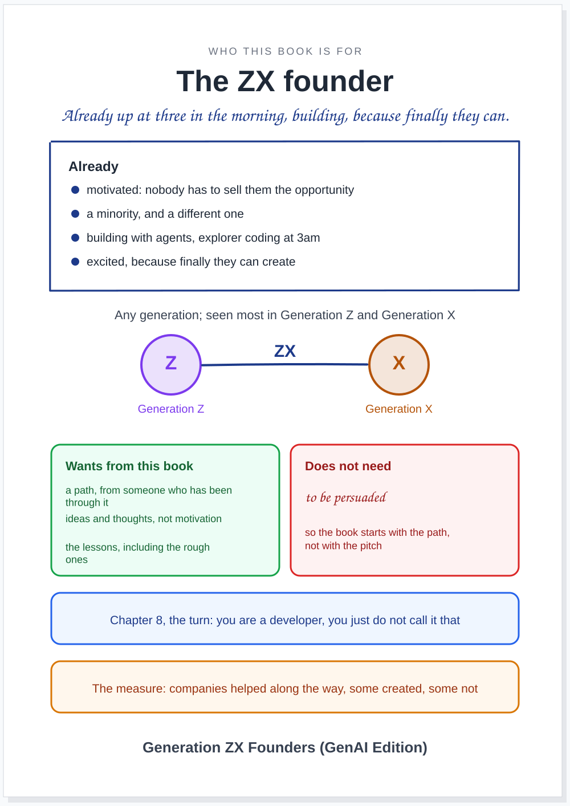
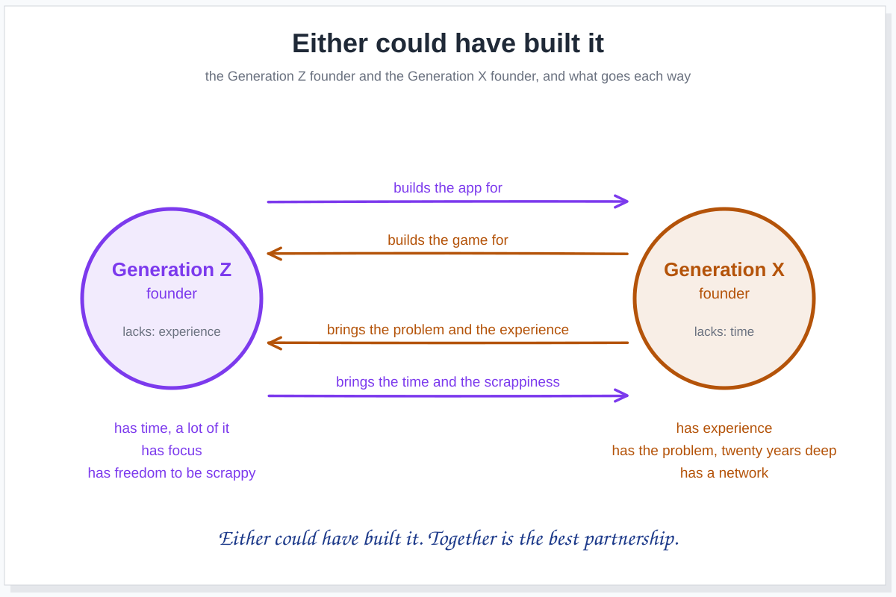

article · 2026-10-19 · site v0.2.38 · markdown
Generation ZX Founders (GenAI Edition): the book is for the ones already up at three in the morning building, of either generation, it names them by the word they use, keeps "you are a developer" for the turn, measures itself by the companies it helped along the way, and opens with the crazy ones
In short
- The book is for the founder. Already motivated, already a minority, already building at three in the morning.
- Any generation. Generation ZX is a mindset: the people building because finally they can, seen most in Generation Z and X.
- The title is Generation ZX Founders (GenAI Edition). Named by the word they use; "Startup" leaves, "GenAI" stays.
- "You are a developer" is the turn, not the secret. It lands in the frame, in the middle, not as a twist at the end.
- Both generations, both ways. Time and scrappiness on one side, experience and the problem on the other; either could have built it.
- You have to rough it. The difficulties are what make you; the book does not pretend success just happens.
- The measure: companies we helped along the way. Some created, some not.
- Open with the crazy ones. Credited, with its story; and explain early what CC BY covers, and what it does not.
Who am I talking to
It is something I keep coming back to: who am I talking to? I think it is important for us to have a very strong, almost visual sense of who our audience is, because a lot of the notes in my review of the printed book only make sense if we assume we are talking to a founder.


If we are talking to a founder, we can start from the beginning by saying: it does not matter what generation you are. You are already motivated. You are already a unique person; in fact you are already a minority, part of the people who will change the world. They are already spending all their time on this, already thinking about it, already coding, or vibe coding, until three in the morning. They are consumed by this energy, and very excited, because finally they can create things.
I think we should start there. The whole book should be written for those individuals, giving them ideas, giving them thoughts, giving them a path that I have gone through and learned from, so we can help them. That is the positioning. It also means the book does not have to persuade anybody of anything in its first chapters, which is exactly what my pen kept crossing out.
Here's to the crazy ones
And I think we should quote, right at the beginning of the book, one of my favourite pieces of writing ever, which I have used before at OWASP events: Apple's Think different advert, the one that starts "Here's to the crazy ones" and goes through the misfits, the rebels, the troublemakers, the round pegs in the square holes, the ones who see things differently. It ends with the line that says what this book is for:
"Because the people who are crazy enough to think they can change the world, are the ones who do."
Apple, Think different, 1997
This is a book for them. The advert has a story worth telling too. It first aired on 28 September 1997, made by the agency TBWA\Chiat\Day, narrated by the actor Richard Dreyfuss. Steve Jobs recorded his own reading of it and would not let it air, in case people thought it arrogant, and the campaign ran until 2002. Apple does not use it now. We credit it, we tell its story, and we quote it, because it says in one line who the reader of this book is.
Either could have built it
Generation Z and Generation X are, in a way, in the same position, for different reasons. When you are young you have a lot of time. You do not have a family or the responsibilities that come with one, so you can be much more scrappy. And you should go through the motions; all of us did. I think the idea that you are just successful is very dangerous. You have to rough it. It is the difficulties, the moments and the challenges that make you you.
Then there is the experience, which is what Generation X has, along with the problem they have lived inside for twenty years; but they may be much more trapped for time. In fact, you can argue that the best partnership is the two together. In the past there was an idea that startups were done by the young, who never hired the grown-ups. Now it goes both ways: the older founder can say "look what I just built for you", a game, an app, and the younger one can build what the older one has described for years. Either could have built it.


So Generation ZX is not a range of birth years. It is the people building because finally they can. We see it most in Generation Z and Generation X, which is why the two letters are on the cover, but a millennial who builds at three in the morning is one of them too.
Founders on the cover, developers at the turn
In You are a developer I wrote that every GenAI founder I know is a developer, and none of them think so; they write the requirements, own the product, design, engineer, deploy continuously and run a development team of agents. But it is very hard to tell someone what they are in a word they do not relate to. So the book is called Generation ZX Founders, by the word they use for themselves, and "you are a developer" is the turn of the book: the moment in the frame where the reader finds out that what they have been doing has a name. It is not held back as a twist for the last page, because this book zooms in and keeps no punchline waiting.
The tagline stays GenAI Edition. With Founders in the title, Startup says the same thing twice; GenAI says a lot. It says which revolution this book is for, and there may be another one coming next. You never know.
The measure
When we said we would measure the book by how many companies it helped to create, I think that was too much. We should say how many companies we helped along the way. Some got created and some did not. That is closer to how it actually goes, it counts the founder who shipped, found out nobody missed it, and learned, and it sounds less arrogant.
Creative Commons, early
We should explain Creative Commons quite early in the book, because it is important, and because it is easy to get wrong. What I am releasing under CC BY is what I created. Anyone may copy it, share it, sell it and remix it, with a small credit for where it came from.
What I quote is not mine to license. Quoting is not relicensing: when the book quotes Apple, the copyright stays with Apple, and the book does not give anybody the rights CC BY gives over my own text. The book can quote other people's work as long as it is a quotation, credited, and no more than the point needs; that is what the law allows a quotation to be, and the book should mark every quotation as its owner's, not as part of what CC BY covers. The crazy ones is a good example to explain it with, right at the start: here is a piece of writing that is not mine, here is whose it is, here is why I can quote it, and here is the difference from everything else in this book, which is yours to take.
The brief
For the editor. Read team/editor/role.md, decisions 019 and 020, and this article first.
- Rewrite the opening for the reader card: the founder, already motivated, no persuading, and the crazy ones quoted at the start, credited, with its story. Done when the opening passes the card, line by line.
- Put "you are a developer" at the turn, in the frame chapter, using the newsroom article; not as a twist at the end. Done when chapter 8 carries it.
- Tell the partnership both ways, and the roughing it: no story where one generation only waits for the other. Done when chapter 1's "wrong story" (note 36) is replaced.
- Explain CC BY early, and mark every quotation as its owner's. Done when the front of the book has the section, and the release edition marks third-party text.
For the publisher:
- Carry the title everywhere: Generation ZX Founders (GenAI Edition) on the Leanpub listing, the covers and the release edition; the measure as companies helped along the way. Done when the listing text in Version 2 on Leanpub is updated in your brief.
- Check the quotation before the release edition goes on sale: the wording against Apple's own, and the extent against what quotation allows where the book is sold. Done when your debrief says so.
For the librarian:
- Process this article, the newsroom's You are a developer and decisions 019 and 020 into the register. Done when each is cited by an idea.
Questions for me, kept apart:
- The site's address:
gen-z-developers.sgit.aistays, or the book gets its own? - The cast: Marta and Zara as two founders, partners, rather than mother and daughter?
What this does not claim
- This is not legal advice. What a quotation may be differs between countries (fair dealing in the UK, fair use in the US); the publisher checks before anything is sold.
- The advert's facts are as recorded by its historians: first aired on 28 September 1997, TBWA\Chiat\Day, narrated by Richard Dreyfuss, Jobs's own reading not aired at the time, the campaign until 2002. The wording of the last line is the one commonly reproduced; the publisher checks it against Apple's.
- "Generation ZX is a mindset" is a framing, mine, not a demographic.
- The reader card is a sketch of who the book is for; the editor tests the chapters against it and changes it when a reader tells us we got them wrong.
Where this comes from
Two voice memos of mine on 19 October 2026, written up by this site's journalist, gen-z.journalist, in my voice, keeping the memos' order and phrases, after the journalist's comments on the title, the reveal and the quotation. The argument and the editorial responsibility are mine. The newsroom article is You are a developer, you just do not call it that. The advert's history is from Cult of Mac, Sound and Vision and Lürzer's Archive. The decisions are 019 and 020.